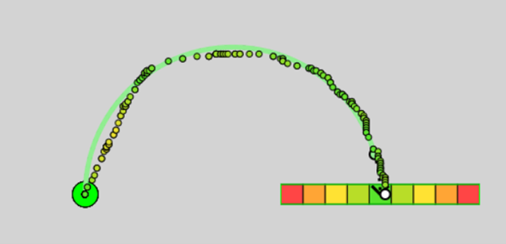

Instructions
- Place your mouse cursor inside the blue circle.
- You will hear a countdown consisting of 4 audible tones.
- Start moving on the 3rd tone when the circle turns green, initiating a movement with your non-dominant (right) hand following the dotted black path.
- There will be a green dot that conveys the ideal speed and accuracy. Follow this dot as closely as you can.
- Complete the movement on the 4th tone by hitting the target. The ideal landing position is the green zone, while the least desired landing position is the red zone. 
- Move Faster: You finished the movement too quickly for the time interval.
- Move Slower: You finished the movement too slowly for the time interval.
Goal
The goal of this task is to accurately move your cursor along the dotted line to the target at the correct speed. Prioritize moving at the correct speed!
Performing the Movement


Feedback
After each movement, you will receive feedback on your performance.
The experiment will temporarily change your cursor sensitivity. Press "Esc" to pause the experiment.